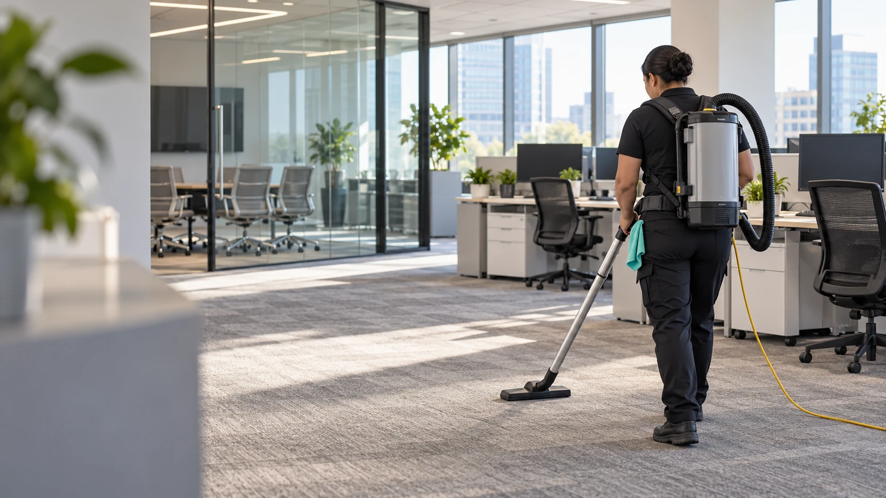
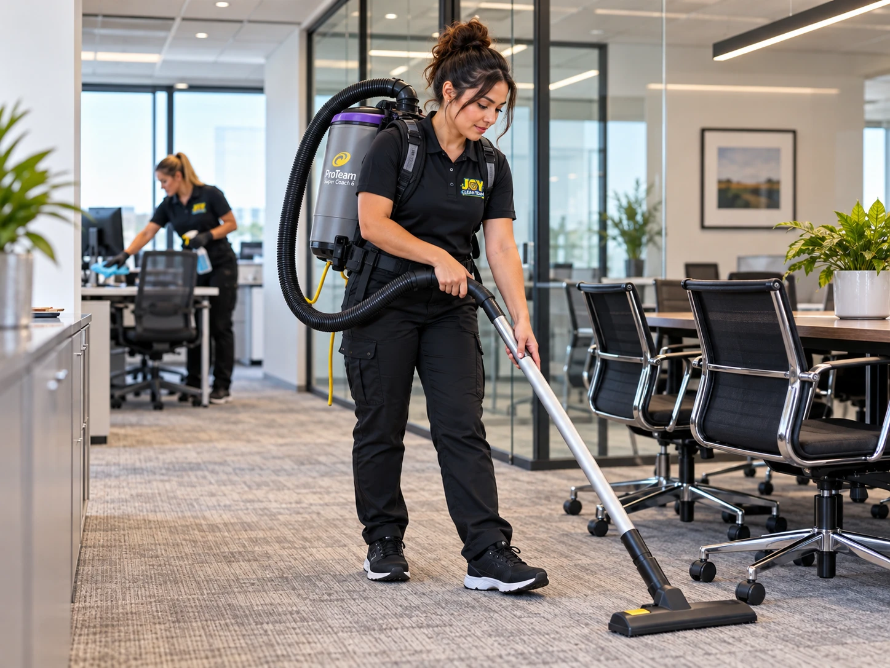

Let's Build a Cleaning Plan for Your Business
Tell us about your property and what you're looking for. We'll discuss your cleaning needs and arrange the next steps toward a customized commercial cleaning quote.

A Cleaner Workplace. A Better Workday.
Keep your workplace clean, welcoming, and ready for business with professional commercial cleaning from Joy Clean Team. Based in Arroyo Grande, we provide dependable cleaning services for offices, businesses, and commercial properties throughout San Luis Obispo County and Santa Maria.
With organized cleaning processes, clear communication, and customized service plans, we make maintaining your workplace simple.
Based in Arroyo Grande
Service tailored to your property
Structured cleaning processes
Straightforward coordination
Every workplace has different cleaning needs. Whether you manage a small office, professional workspace, or commercial property, Joy Clean Team can help develop a cleaning plan suited to your space and schedule.
Routine cleaning for professional offices, including desks and accessible surfaces, floors, trash removal, and common areas.
Help your business make a positive first impression with clean floors, customer areas, glass, and frequently used surfaces.
Cleaning for lobbies, hallways, shared spaces, and other designated common areas in commercial properties.
Detailed cleaning of sinks, toilets, mirrors, fixtures, and other accessible restroom surfaces.
Cleaning countertops, sinks, tables, and exterior surfaces of appliances in workplace breakrooms.
Additional cleaning services for properties needing occasional deep cleaning or more detailed attention.
Commercial cleaning plans are customized based on the property and agreed scope. Let's discuss what your business needs.
A clean workplace makes a difference for employees, customers, and visitors. Joy Clean Team offers customized recurring cleaning services designed to keep your property consistently maintained.
Whether your business needs cleaning multiple times per week, weekly, or on another schedule, we'll work with you to develop a practical service plan based on your needs.

We take a structured approach rather than simply sending cleaners to a property without a plan. Here's how we work:
We learn about your building, priorities, cleaning requirements, and preferred schedule.
We provide a quote outlining the cleaning scope, recommended frequency, and service expectations.
Our team follows established cleaning procedures and property-specific instructions.
We maintain communication about service needs, updates, and any adjustments to the cleaning plan.
We understand that business owners and property managers need more than a clean building. They need a cleaning company that communicates clearly, respects their property, and follows through on its commitments.
Organized crews that follow structured cleaning processes and property-specific instructions.
We focus on the details that help workplaces stay clean, comfortable, and presentable.
Clear quotes, convenient communication, and practical coordination throughout the service relationship.
Based in Arroyo Grande, we're proud to support businesses throughout San Luis Obispo County and Santa Maria.
Joy Clean Team provides office and commercial cleaning services to businesses throughout the Central Coast. Based in Arroyo Grande, we proudly serve San Luis Obispo, Pismo Beach, Grover Beach, Avila Beach, Morro Bay, Atascadero, Paso Robles, Santa Maria, and surrounding communities.
Whether you operate a professional office, storefront, or commercial property, our team can help create a cleaning plan suited to your location and needs.
Commercial cleaning prices vary based on the size of the property, cleaning frequency, scope of work, and specific requirements. We provide customized quotes after reviewing your cleaning needs. Contact us to discuss your property.
Yes. We offer recurring commercial cleaning arrangements tailored to the property and our scheduling availability. Frequency can range from multiple times per week to monthly, depending on your needs and our availability.
Scheduling options depend on your property requirements and our team's availability. Let us know your preferred hours when requesting a walkthrough, and we'll discuss what's possible.
Our team provides the supplies and equipment required for the agreed service unless otherwise arranged. If your property requires specific products or special considerations, let us know during the walkthrough.
Yes. We can develop a property-specific cleaning checklist based on the approved scope of work and your priorities. This ensures your cleaning plan matches your expectations.
We serve offices, professional workplaces, retail spaces, common areas, and other suitable commercial properties. Contact us at (805) 457-4584 to discuss your facility and cleaning needs.
Tell us about your property and what you're looking for. We'll discuss your cleaning needs and arrange the next steps toward a customized commercial cleaning quote.